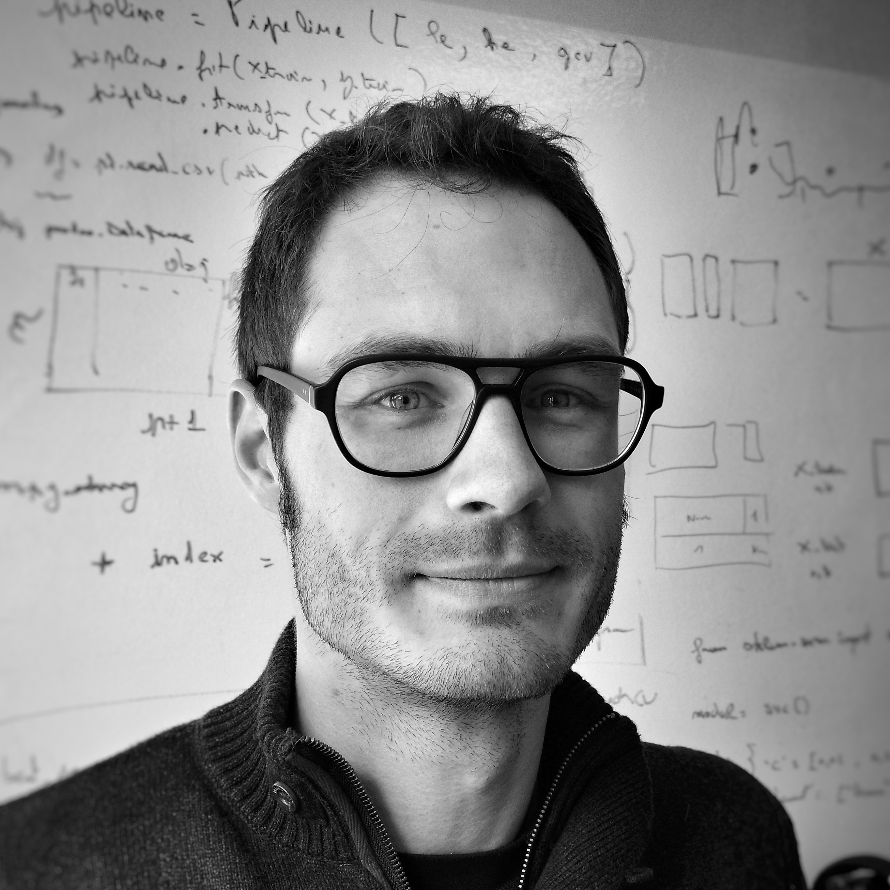

Interests | Contact & Information | Projects/Hobbies | Publications & Patents

Pierre SENDOREK is a Data Science consultant working at Xebia, where he is also recruiter and formator in the domain of neural networks.
In 2015, he obtained a PhD in Applied Mathematics and Signal Processing. He also holds an engineering diploma, which he
obtained in 2009 from Télécom ParisTech, the leading school in signal processing in France,
as well as a master 1 degree in mathematics, which he obtained in 2006 from the University
of Paris-Est Marne-la-Vallée (UPEM).
Interests
Neural Networks : Sequence to Sequence models, Reinforcement Learning, Generative Adversarial Networks
Signal processing, particularly image and sound
Markov Chains, Markov Random Fields
Bayesian models
Contact & Information
e-mail : pierresendorek@gmail.com
github : https://github.com/pierresendorek/
 LinkedIn
LinkedIn
My projects/Hobbies
Voice conversion : conversion of the voice of one's person to the voice of
another person. Work in progress. The related material is on my
Github 
Voice to drums : redrum : a simple algorithm which converts voice imitation of drums to sampled drums.
Read more 
Vocoder : FFT based Vocoder algorithm.
Read more 
D'Alembert : numerical solution to the wave equation.
Read more 
Particles : numerical simulation of the movement of several interacting particles.
Read more 
Publications and Patents
Pierre Sendorek. “Amélioration de l’intégrité d’un système de positionnement GNSS/IMU” (Improvement of the integrity of a GNSS/IMU positioning system). PhD Thesis, French. CIFRE with Thales Avionics, Valence and Télécom ParisTech, june 2015. Industrial Confidentiality.
Pierre Sendorek, Karim Abed Meraim, Maurice Charbit. "Amélioration de l'intégrité d'une position GNSS par une réduction de la sensibilité à une panne satellite"
Brevet Français Numéro P2937 6 sept. 2013. To be published
Pierre Sendorek, Karim Abed Meraim, Maurice Charbit, Sébastien Legoll. "Improvements of GNSS/INS localization’s integrity with Gaussian
Mixture Filters in a Bayesian Framework"
The 6th European Workshop on GNSS Signals and Signal Processing, Universität der Bundeswehr München. December 2013.
Pierre Sendorek, Karim Abed Meraim, Maurice Charbit, Sébastien Legoll. "Locally optimal confidence ball for a gaussian mixture random variable"
4th Int. Conf. on Indoor Positioning and Indoor Navigation(IPIN), Oct 2013, Belfort, France. 2013.
Daniel R.S. Caon, Thierry Simmonet, Pierre Sendorek, Jérôme Boudy and Gérard Chollet. "vAssist: The Virtual Interactive Assistant for Daily Home-Care."
8th International Conference on Wearable Nano and Macro Technologies for Personalized Health (pHealth'11)
Kotnik, Bojan, Pierre Sendorek, Sergey Astrov, Turgay Koc, Tolga Ciloglu, Laura Docío Fernández, Eduardo Rodríguez Banga, Harald Höge, and Zdravko Kacic. "Evaluation
of voice activity and voicing detection." In INTERSPEECH, pp. 1642-1645. 2008.
Last modification : Nov 23th, 2019